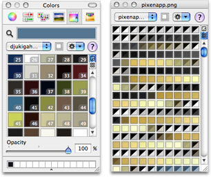

Working with palettes
Whether you're creating a high-color or a low-color image, Pixen's palette functionality can help you find and use the colors you need quickly. This is what a common configuration looks like:

To view the document's palette:
Click the Palette icon in the document's toolbar.
or
Use the Palette > Show Document Palette menu item.
To access a saved or included palette:
- Open a Pixen palette panel by clicking the Palette icon in a document's toolbar or by clicking the Pixen Colors icon in a color panel's toolbar.
- Choose the desired palette from the drop-down menu.
Once you have the palette you want to displayed, you can choose a color from it by clicking, edit a color by double-clicking, or reorder the colors by dragging.
Want to have Crayons and Pastels open at the same time? No problem. Click the pop out ( ) button to get another panel. Pixen aims to imitate a real-life artist's palette.
) button to get another panel. Pixen aims to imitate a real-life artist's palette.
See also
Making a custom palette
Sharing palettes
Using the manual palette mode for low-color images
Palette Topics